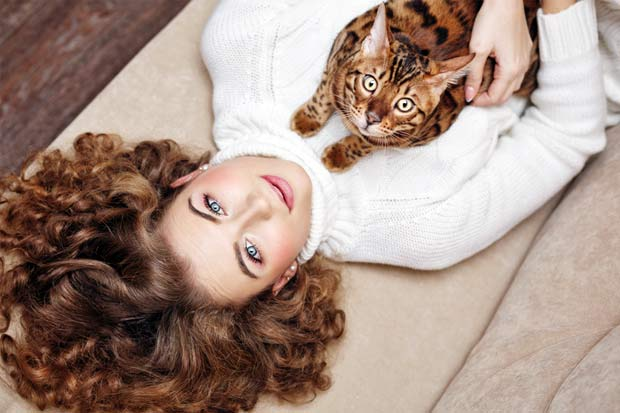
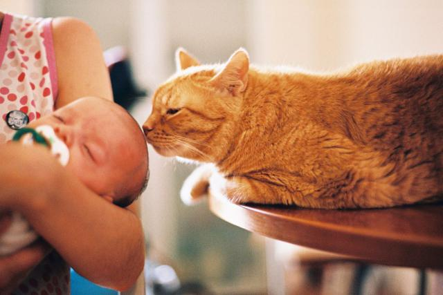

اگر شما هم صاحب یه گربه هستین حتما براتون جالبه که بدونین آیا گربه من منو میشناسه؟ احساس گربه به صاحبش که من باشم، چیه؟خیلی از افراد فکر میکنن اونا فقط بخاطر غذا به صاحبشون اهمیت میدن و احساسی بهش ندارن. ولی شواهد خلاف این رو ثابت کرده. بله، گربه صاحبش را میشناسد! در این مطلب قراره در مورد احساس گربه به صاحبش و رفتار شناسی گربه ها صحبت کنیم تا این موجودات باهوش و خاص رو بیشتر و بهتر بشناسید. در ادامه با ما در پت پرس همراه باشید.

آیا گربه چهره صاحبش را میشناسد؟
احتمالا گربه ها برای شناسایی صاحبشون از حواس دیگهشون کمک میگیرن، نه حس بینایی.
پرسه زدن در کنار مزارع آدم ها به اونا این شانس رو میداد که از جوندگانی که آفت مزارع بودن تغذیه کنن و زنده بمونن. البته انسان ها هم از این قضیه بدشون نیومد و اون ها رو در کنار خودشون پذیرفتن.
شاید به همین دلیل باشه که برخلاف سگ ها، گربه ها هیچ وقت نیاز پیدا نکردن چهره انسان ها و حالت های اون ها رو تشخیص بدن. این ویژگی گربه ها میتونه به شما در ارتباط برقرار کردن با اونا کمک کنه.
به خصوص زمانی که شما با یک گربه خیابانی میخواین ارتباط بگیرین. با دادن غذاهای ارزان گربه به گربه های خیابانی با اون ها ارتباط برقرار کنین و به اصطلاح باهاشون دوست بشین.
دوست شدن با گربه ها کمی قلق داره که ما در مقاله «مراحل دوستی با گربه» این موضوع رو بهتر برای شما توضیح دادیم.

آیا گربه صدای صاحبش را میشناسد؟
شواهد نشون میدن گربه ها با صدای صاحب خودشون آشنا هستن. مطالعه ای در سال ۲۰۱۳ در دانشگاه توکیو ثابت کرده گربهها بین صدای صاحبشون و صدای غریبهها تفاوت قائل هستن.
در این مطالعه گربهها صدای غریبههایی که اسمشون رو صدا میزدن کاملا نشنیده گرفتن ولی وقتی صاحبشون اسمشون رو صدا میزد، گوشهاشون رو به نشانه توجه به سمت صدا برمیگردوندن و توجه بیشتری نشون میدادن.
گربهها حیوانات باهوشی هستن و کاملا تربیتپذیرن. شما میتونین خیلی چیزا بهش یاد بدین و اونو به یه گربه آروم و مودب تبدیل کنید و به آسونی اعتمادشو جلب کنین و باهاش دوست بشین.

آیا گربه بوی صاحبش رو میشناسه؟
قوه بویایی گربه ها قویه. با اینکه به خوبی نیست اما از قوه بویایی آدم ها بسیار قوی تره. مانند حیوانات دیگه، گربه ها هم از قوه بویاییشون برای شناسایی محیط اطرافشون استفاده میکنن. اونا به احتمال خیلی قوی بوی شما رو احساس میکنن و براشون خوشایند و آرامش بخشه.

آیا گربه ها عادت های ما رو میشناسن؟
گربه ها استاد یاد گرفتن الگوهای زندگی ما هستن. دقیقا برای همینه که دقیق میدونن کدوم عضو خونواده و چه ساعتی بهشون غذا میده و سر ساعت میرن سراغ همون شخص. این رفتار اون ها نشون میده حتی در یک خونواده هم بین اعضا تفاوت قائل میشن و یه نفر رو به عنوان صاحبشون بیشتر قبول میکنن.
گربهها به خوبی می توانند احساسات ما را درک کنند و اعضای خانواده ما را از هم تشخیص دهند. اما آیا ما هم می توانیم احساسات و رفتارهای آنها را به خوبی متوجه شویم و آنها را تشخیص بدهیم؟ برای اینکه بتوانیم حالات گربه ها را از روی حرکات آنها تشخیص بدهیم نیاز داریم تا ابتدا به خوبی به این رفتارها توجه کنیم. اگه دوست دارین بدونین که هر حرکت گربهتون چه معنی داره، پیشنهاد می کنم مقاله «معنی حرکات گربه ها» حتما مطالعه کنین.

علت لیس زدن گربه به صاحبش چیه؟
لیس زدن یکی از رفتارهای مود علاقه گربههاست و اغراق نکردیم اگه بگیم نصف عمرشون رو در حال لیس زدن خودشون یا بقیه هستن!
گربهها علاوه بر خودشون تمایل زیادی به لیس زدن صاحبشون هم دارن. دلیل اینکار بیش از هرچیز ایجاد ارتباط و پیوند عاطفی بین گربه و صاحبشه.
گربه مادر با لیس زدن بچههاش، اونا رو تمیز و مرتب میکنه، با دور کردن آلودگی در برابر بیماری ازشون مراقبت میکنه و خلاصه با لیس زدن محبتش رو به بچه هاش نشون میده. این رفتار در گربهها تثبیت میشه و به این ترتیب، وقتی گربه میخواد محبت و علاقهش رو به شما نشون میده شروع به لیس زدن دست، پا یا حتی صورتتون میکنه.

آیا گربه ها صاحبشون رو به یاد میارن؟
دوست داشتنی ترین کشفی که درباره گربه ها شده اینه که افراد آشنا، به مدت طولانی در حافظه گربه ها باقی میمونن، حتی بعد از چندین و چند سال.
برای همین نگران نباشین، درسته که گاهی به نظر میاد گربه شما هیچ اهمیتی بهتون نمیده ولی این کاراش غیرواقعیه، اون شما رو میشناسه و براش مهم هستین. مخصوصا وقتی موقع شام و نهار میشه!
چرا گربه ام از من میترسه؟
گربهها موجودات محتاطی هستن و به این راحتیها به کسی اعتماد نمیکنن. اگه گربه رو تازه به خونه آوردید ممکنه اوایل ازتون بترسه و همهش یه گوشه زیر مبل یا زیر تخت قایم بشه. این رفتارها کاملا طبیعیه و در شرایط ایده آل ظرف چند روز یا چند هفته برطرف میشه. باید به گربه فرصت بدید کم کم به شما و خونه جدید اعتماد کنه.
با محبت کردن و مراقبت و صبر و حوصله میتونید بهش بفهمونید که اینجا دیگه جاش امنه و نیازی به ترسیدن نداره.
بدرفتاری، دعوا کردن، آب پاشیدن و دلایلی که در قسمت قهر کردن گربه می گیم هم اگه زیاد تکرار بشه میتونه باعث ترس گربه از شما بشه.
اگه میخوای گربه تازه واردتون از شما نترسه بهتره مطلب چیکار کنم که گربه ازم نترسه؟ رو هم بخونین.

آیا گربه ها قهر می کنند؟ دلیل قهر گربه ها چیه؟
گربهها خیلی مغرور و استقلال طلب هستن و حریم خصوصیشون خیلی براشون مهمه. حالا اگه شرایط طوری باشه که احساس راحتی و امنیت نکنن ممکنه با شما قهر کنن و بداخلاق بشن. توی لیست زیر چند اتفاقی که میتونه باعث قهر کردن گربه بشه رو آوردیم:
- احترام نداشتن به حریم خصوصی گربه: مثلا گربهها وقتی خوابن دوست ندارن کسی مزاحمشون بشه. حالا اگه وقتی گربهتون در حال استراحته برید بغلش کنید یا سعی کنید باهاش بازی کنید ممکنه باهاتون قهر کنه و با بداخلاقی و گاهی پرخاشگری باهاتون رفتار کنه.
- حسادت و اومدن گربه جدید: یه موقع هم دلیل قهر کردن گربه حسادت کردن و به خطر افتادن قلمروشه.
- تغییر غذا: تغییر ناگهانی غذای گربه هم میتونه یکی از دلایل قهر گربه باشه. عوض کردن غذای گربه باید تدریجی و به مرور انجام بشه؛ در غیراین صورت گربه واکنش خوبی نشون نمیده و حتی ممکنه چند روز اعتصاب غذا بکنه تا بالاخره غذای قبلی رو بهش بدید.
- تنبیه و کتک زدن گربه: گربهها شیطونن و گاهی خرابکاری هم میکنن. اما ما نباید هیچ وقت سرشون داد بزنیم یا بدتر از همه، یه موقع کتکشون بزنیم. در این صورت گربه ممکنه با شما قهر کنه که البته دلیل اصلی قهرش اینه که از شما ترسیده و دیگه مثل قبل بهتون اعتماد نداره.
- عوض شدن صاحب گربه: گربهها به صاحبشون وابسته میشن و اصلا از تغییر خونه و صاحبشون خوششون نمیاد. حالا اگه بنا به هردلیل صاحب گربه عوض بشه و گربه به خونه جدیدی بیاد ممکنه اوایل رفتار دوستانهای نشون نده و حالتهایی شبیه به قهر کردن داشته باشه.
به مرور و با محبت کردن مشکل عوض شدن صاحب به راحتی حل میشه و جای نگرانی نیست ولی دعوا کردن گربه به هیچ وجه فایدهای نداره و تنها راهش تربیت اصولی گربهست.

علت رفتن گربه از خانه و فرار کردنش چیه؟
گربه ها به دلایل مختلفی ممکنه از خونه فرار کنن. این مشکل به ویژه در گربههایی که تو حیاط هستن و امکان فرار و خروج از خونه رو دارن دیده میشه.
فحل شدن گربه و نیاز به جفتگیری: اصلیترین دلیل فرار و رفتن گربه از خانه بالغ شدن و نیاز به پیدا کردن جفته. گربهها بعد از حدود ۶ ماهگی بالغ میشن و سالی چندبار به اصطلاح فحل میشن و نیاز به جفتگیری دارن. در دوره فحل گربه تمایل زیادی به فرار از خانه و پیدا کردن جفت داره.
عمل عقیم سازی گربه در سنین ۶ الی ۱۲ ماهگی فواید و مزایای فراوانی داره که یکیش همین جلوگیری از فرار گربه است.
کنجکاوی، شیطنت و دنبال کردن بوی گربههای خیابانی: گاهی گربه از سر کنجکاوی از خونه فرار میکنه. ممکنه گربهتون تو حیاط باشه و یهو با دیدن یه پرنده یا حتی یه گربه دیگه کنحکاویش تحریک بشه و دنبالش بره و بعد راه برگشت به خونه رو پیدا نکنه و گم بشه. گربههای خونگی به هیچ وجه توانایی زندگی کردن تو خیابون رو ندارن و در معرض آسیب و خطر و حتی مرگ هستن. بنابراین مراقب باشید و اگه با مسدود کردن راههای فرار، بستن در و پنجره، فنس کشی و … جلوی گم شدن و فرار گربهتون رو بگیرید.
نظر شما چیه؟ ایا گربه ها محبت را میفهمند؟
شما از تجربه و ارتباطتون با گربه ها برامون بگید؟ به نظرتون گربهها وفادارن و محبت و عشق شما رو میفهمن؟ گربهها چطوری محبتشون رو به شما نشون میدن؟ ارتباط برقرار کردن با گربه ها سخته یا آسون؟ لطفا برای ما کامنت بذارید و نظر، تجربیات و سوالات خودتون رو با ما و دیگر خوانندگان در میون بذارید.

سلام وقت بخیر
من یک گربه ی پرشین بلو گرفتم که دو سه روزه سرپرستیش رو قبول کردم
همه واکسن هاشو زدن سابقه بیماری نداره عقیم شده و..
قبلا دست کس دیگه ای بود که حالا چون گربه ی دیگش با نودل سازگاری نداشت ولش کرده حالا هم من گرفتمش
گربه ی خیلی خوبیه خیلی اروم و دوست داشتنیه اسمشو عوض کردم ولی حس میکنم خیلی ناراحته باهام بازی نمیکنه و جلوش اسباب بازی میارم روشو اونور میکنه تمام روز رو خوابه تقریبا دسشوییش مشکلی نداره فقط اب رو به میل خودش میخوره ولی مرغ رو تا وقتی بهش ندم نمیخوره یا به اون صورت علائمی نشون نمیده ک گرسنس و غذای خشکش هم تا با دستم ندم نمیخوره ینی خیلی کم پیش میاد میزاره نازش کنم حتی میزاره مامانم هم نازش کنه حتی میچرخه که شکمشم ناز کنم میزاره موهاشو شونه کنم ولی خیلی دوس داره بره جاهای تاریک مثل تو کمد و .. ولی خواهرم چون از گربه میترسه نمیتونم بزارم بره تو اتاقا و دم اتاق گاهی میشینه میو میو میکنه و در غیر این صورت صداشو نمیشنوم اصلا .نمیدونم چیکار کنم دوس دارم بیشتر بازیگوشی کنه در ضمن روز دومی که اینجا بود خواهرم خونه نبود خیلی راحت میچرخید تو خونه ولی از امروز که خواهرم اومده خیلی ارووم شده حتی بچه خواهرم اتفاقی دمشو کشید ولی هیچ واکنشی نشون نداد و فقط خودشو یه گوشه جم کرد.خواهش میکنم بگید چه کنم .حالا میخوایم بریم سفر نمیتونم ببرمش بزارمش پیش کسی که خودشم گربه داره براش بده؟بدترش میکنه ینی؟مرسی برا وقتی که میزارید
سلام زهرا جان،
چقدر خوب که گربتون رو به سرپرستی گرفتین.
جابجا شدن محیط زندگی برای گربه ها استرس آوره، این استرس و گوشه گیری خصوصا اگه صاحبش هم عوض بشه بیشتر میشه. لازمه یکم بهش زمان بدین تا عادت کنه به محیط و خودش بیاد طرف شما. ترجیحا اگه امکانش رو دارین با خودتون مسافرت ببرینش که استرس جای جدید و فرد جدید به مشکلات الانش اضافه نشه. مگه اینکه گربتون خونه خودتون (همین خونه جدیدش) بمونه و از دوستی بخواین به خونتون سر بزنه.
منم گربم اینطوری شده بود ولی بعد از پنج روز بهم عادت کرد 😍
سلام،ممنون از مطالب خوبتون
من یک بچه گربه دو ماهه دارم که خیلی نمیشه شیر خشک دادن بهش رو قطع کردم و بهش غذا میدم
اما غذای خونگی و جدیدا این غذای خونگی رو با غذای گربه خشک قاتی میکنم. میخوام بدونم این قاتی کردنه خوبه؟
آخه ریزش مو داشت و من فکر کردم باید از مواد مغذی غذای گربه بخوره.
بعد اینکه واجبه حتما غذای بچه گربه مخصوصشو بخوره یا خونگی مشکلی نداره؟
سلام پریچهر جان،
مخلوط کردن غذاش ایرادی نداره. میتونین گاهی اوقات غذای خشکو از خونگی جدا بدین. غذای خشک مخصوصشون به هرحال نیازهای غذاییشونو فرموله شده در اختیارشون میذاره که غذای خونگی ممکنه همه ی اون نیازارو نتونه برطرف کنه. غذای خشک مخصوص، مولتی ویتامین،مکمل ها، برس کشیدن منظم و … درکنترل ریزش مو موثرن. این مقاله میتونه کمکتون کنه:
علل مختلف ریزش مو در گربه ها
سلام من یه پرشین رگدالریک و نیم ماهه رو سرپرستیش رو قبول کردم.البته صاحبش گفت که پرشین هشت ولی من تحقیق کردم رگدال هست فعلادموهاش کم و کوتاهه.و من تو خونه دوتا پرنده دارم.یکیش ملنگو هشت اونیکی کوتوله و هدو تو قفش هستن السته ملنگووو اطرافرقفسش و چوب های بازی که بهش وصل کرده به سقف بازی میکنه .گربهدام فقط خیره میشه و نیگا میکنه چکار کنم که بتونم تو خونه تنهاش بزارم و حمله ای صورت نگیره
سلام امیرمحمد عزیز،
بهترین کار اینه که موقع نبودن شما قفس پرنده داخل اتاقی باشه که گربتون بهش دسترسی نداشته باشه.
سلام…امیدوارم جواب بدین..من دوتا گربه ماده دارم حدودا ۶ ماهه…برادرم دانشجوی دامپزشکیه ولی خب زیاد چیزی نمیدونه…ولی طبق نشونه هایی ک میدن میگه وقت جفت گیریشونه
میخاستم بدونم بلاخره که باید برن و اگه برن برنمیگردن… باید جایی رهاشون کنیم؟ مثلا پارکی..کنار رستورانیی…یعنی دقیقا چه جایی براشون امن تر هست و میتونن غذا و آب پیدا کنن بنظرتون؟
سلام ستایش جان،
باعث افتخاره که برادرتون دامپزشکی میخونن.
اگه امکان عقیم سازیشونو دارین میتونین رهاشون نکنین و تو دوره ای که فحل نیستن اقدام کنین برای جراحیشون. باتوجه به اینکه گربه ی خونگی هستن و به شرایط بیرون عادت ندارن (خصوصا که هر گربه قلمرو داره و گربه های تازه وارد شما پایینترین مقامو دارن ممکنه از لحاظ غذا و امنیت تامین نشن) اونم تو شرایط ایران رهاسازیشون گزینه ی مناسبی نیست و اگه هیچ جوره نمیتونین ازشون نگهداری کنین میتونین براشون آگهی واگذاری بدین.
سلام. وقت تون به خیر. گربه ی سه ساله ی نری دارم که چند روزه دست راستش رو گاهی بالا نگه می داره و مرتب لیس می زنه. در ظاهر راحت راه می ره و می پره و بازی می کنه. به اندازه ی همیشه با گربه ی دیگه ای که دارم هم بدو بدو و بازی می کنه. زخم، تورم و قرمزی هم وجود نداره، فقط گاهی که نشسته چند لحظه دستش رو بالا می گیره و هی لیس می زنه. قبلا این کار رو نمی کرد. با توجه به شیوع کرونا و این که مشکل راه رفتن و وزن گرفتن روی دست نداره، چه زمانی لازمه به پزشک مراجعه کنم؟ ضمن این که همیشه داخل خونه بوده و از بیرون رفتن و باکس و دامپزشکی هم می ترسه و طفلی خیلی دچار استرس می شه.
ممنون می شم راهنمایی کنین.
سلام لیدا جان،
ممکنه صرفا تایم تمیز کردن پنجه هاشو بیشتر کرده باشه با توجه به اینکه میگین هیچ علائم دیگه ای نداره میشه گفت مشکل جدی ای نیست و یجورایی رفتاریه. اگه علائم بیشتری دیدین میتونین اطلاعات بیشتر رو همراه عکس از طریق مشاوره آنلاینو دراختیارمون بذارین:
با مشاوره دامپزشکی آنلاین کنار شما هستیم (سوال مستقیم و تخصصی از دامپزشکان پت پرس)
خیلی ممنون از پاسخ تون.
سلام من به گربه دال فیس دارم عصاره مالت رو با رقبت نمیخوره رو غذاش میریزم دیگه اون غذارو نمیخوره برند آلمانی گرفتم مشاوره گرفتم میگن بزور بریز دهنش بنظرتون چرا اینجوریه
سلام الهام جان،
مالت خوردن هم بین گربه ها سلیقه ای هست و بعضیا ممکنه خوششون نیاد. برندای مختلف رو امتحان کنین. درنهایت اگه راهای دیگه جواب نداد همون به زور خوروندنش رو باید امتحان کنین.
ممنون مریم عزیز
سلام من هم گربه دارم و روی گلدون ها رو با توری سفید پوشاندم دیگه کاری باهاش ندارند
خیلی خوب بود ممنون
گربه من از بچگیش توی خونه ما به دنیا اومد تا ۱۰ ماهگی. به طوری که توی خونه و اتاق من بود اما توی حیاطم میرفت و میومد پیش خودم. خیلی منو دوست داشت. نر بود و عقیم نشده بود. با محیط بیرونم کم و بیش آشنا بود گاهی میرفت و چند ساعت بعد بر میگشت پیشم. از گربه های دیگه هم میترسید. الان دو هفته هست که نیست ، به نظرتون با توحه به شرایط عالیش توی خونه ی من و رابطه ی خوبش با من چه اتفاقی براش افتاده، کل محل رو وجب به وجب گشتم همه جا آگهی دادم اما هنوز خبری ازش نیست.
امیدوار به برگشتش باشم؟ ممکنه یه روز بیاد؟
گربه من بسیار زیبا و شیطون بود و سالم و شناسنامه دار بود. بچه م بود. بر میگرده ، الان ۱۵ روزه چشم به راهشم.
سلام سارا جان،
متاسفم بابت اتفاقی که تجربه کردین.
هر چیزی میتونه ممکن باشه و پیش بینیش از توانایی من خارجه. 🙂 با توجه به اینکه گفتین عقیم هم نشده ممکنه بیرون از خونه قلمرو تشکیل داده باشه، اگه گم شده باشه میتونه راهشو سمت شما پیدا کنه.
امیدوارم که زودتر پیداش کنین.
سلام وقتتون بخیر
من چند وقته دو تا گربه خیابونی رو تو حیاطم غذا دادم موندگار شدن چشم یکیشون عفونت کرده بود بردم دامپزشکی اونجا سگو دید منو چنگ گرفت نتونستم نگهش دارم فرار کرد بنظرتون به هوای اون یکی برمیگرده؟؟دو کیلومتر فاصلس تا خونه تو ماشین بیرونو نگاه نمیکرد
سلام علی عزیز،
هرچیزی ممکنه نمیشه پیش بینی کرد. اگه خیلی نگرانش هستین میتونین اون محدوده ای که فرار کرده رو بگردین.
سلام
من ۴،۵ روز هست که یه گربه نزدیک به ۳ ماه گرفتم ،حمایتی هست و بسیار آسیب دیده پاش توی تسمه ماشین خورد شده بوده دکتر جراحی کرده و من به سرپرستی گرفتمش ،تنها مشکلم اینه که من داخل خونه گل دارم و این به شدت به سمت گلها میره و داخلشون هم حتی میره و خرابشون میکنه بسیار شیطون هست و بغلی ،چیکار کنم طرف گلها نره یا دست نزنه
ممنون میشم راهنمایی کنید ،روز خوبی داشته باشبد
سلام شیوا جان،
چقدر خوبه که حامی گربتون شدینو به سرپرستی گرفتینش.
اگه امکانش رو دارین جا گلدونارو عوض کنین یا یجا دور از دسترسیش بذارین (مثلا آویزونشون کنین یا میتونین توی بالکن بذارین) چون غیر مسئله ی خراب کردنشون ممکنه گیاهی که نگه میدارین برای گربتون سمی باشه.
اما اگه نمیتونین جاشونو عوض کنین هم چندتا راه هست: وقتی نزدیکشون میشه بهش آب اسپری کنین، یسری اسپری های استاپر هست اونا هم قابل استفادن، فکر کنم از بوی پوست پرتقال و لیمو هم خوششون نیاد گربه ها.
خیلی ممنون
تعداد گلها زیاده و هیچ کدوم سمی نیستن
سعی کردم برشون دارم اما سعی میکنه بره بهشون نزدیک بشه تو طبقات دیگه قفسه
از امروز شروع کردم بهش با دست و صدا بفهمونم که نباید اینکارو انجام بده
۵ روزه پیش کنه
هنوز اسمشو نمیشناسه اما شیرینه
شیوا جان،
ممنون که تجربتون رو با ما به اشتراک گذاشتین.
سلام من گربمو از بچگی خودم بزرگ کردم الان یه سالش شده یه مدتی شرتیط نگهداریشو نداشتم و الان دوهفتس پیش دوستمه که خودشم قبلا گربه داشته و الان سگ داره.بعد از دو هفته رفتم ببینمش انگار منو نمیشناخت نمیدونم دودل بود. تازه چنگمم زد هیووقت منو چنگ نزده ت این یکسالو نه هیچ غریبه ی دیگه ای رو.دوستم گفت گربه کلا بعد از یک هفته به شرایط جدید عادت میکنه وصاحب قبلیشو فراموش میکنه.میخام بیارمش یعنی واقعا اصن منو به یاد نمیاره و باهام سرده؟
سلام فروغ جان،
یادشون نمیره ولی خودشونو با شرایط جدید وفق میدن. حتی اگه خودتون دوباره بخواین نگه دارین یه مدت غریبی میکنه و زیر تختو مبل قایم میشه ولی بعد دوباره بهتون عادت میکنه.